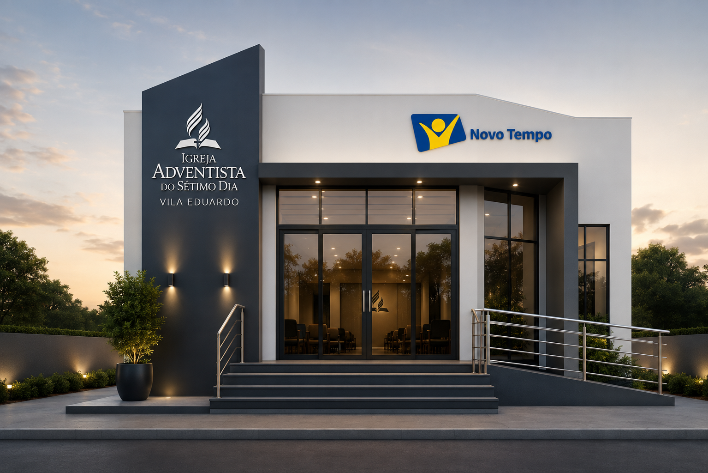
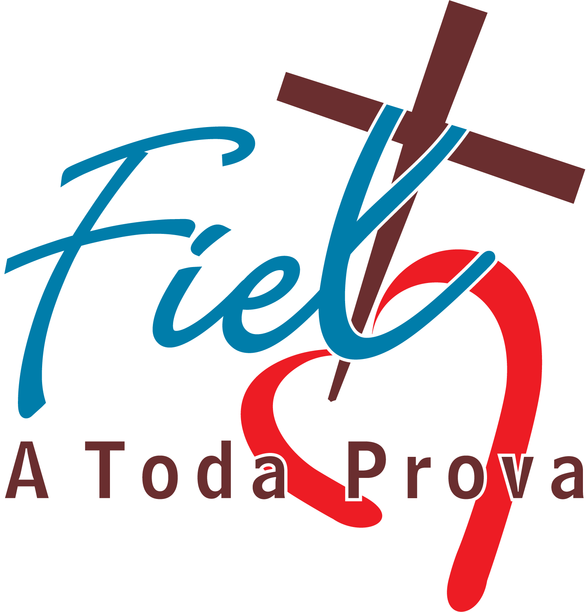

Projeto Som da Esperança
Desenvolva seus dons, fortaleça a fé e toque vidas por meio da música.

IASDVila Eduardo Quero visitarIgreja Adventista do Sétimo Dia
Um lugar de fé, esperança, comunhão e transformação. Venha conhecer a IASD Vila Eduardo.
“Porque Deus amou o mundo de tal maneira...” João 3:16
Nossa programação
Venha como você está. Esperamos por você com alegria.
19h30
Culto de esperança para começar bem a semana.
19h30
Oração e fortalecimento espiritual.
08h45
Escola Sabatina e comunhão com Deus.
Planeje sua visita
Queremos que sua primeira visita seja leve e especial. Nossos cultos são momentos de adoração, estudo da Bíblia e amizade.
Participe
Carregando agenda…
Memórias
Carregando álbuns…
Estamos com você
Envie seu pedido de oração. Será uma alegria orar por você.
Enviar pedido de oração (abre em nova aba)Fique por perto
Acompanhe a vida da nossa igreja e encontre o canal que precisa.
Encontre seu lugar
Desenvolva seus dons, fortaleça a fé e toque vidas por meio da música.

Para visitantes e pessoas que desejam conhecer a Igreja com respeito, carinho e atenção.

Aprendizagem, diversão e crescimento espiritual para as crianças.

Serviço cristão de apoio a famílias e transformação da comunidade.

Desenvolvimento educacional, espiritual e recreativo para crianças e adolescentes.
Generosidade
Dízimos e ofertas podem ser devolvidos pelo 7Me. Você também pode apoiar a Ação Solidária Adventista.